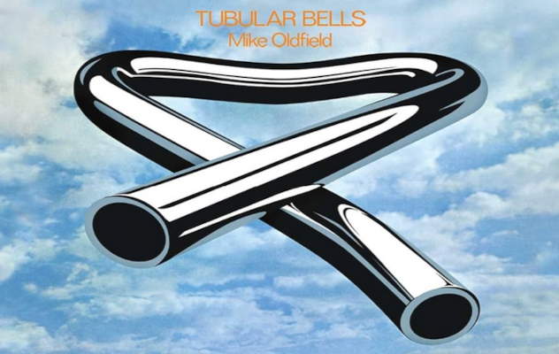
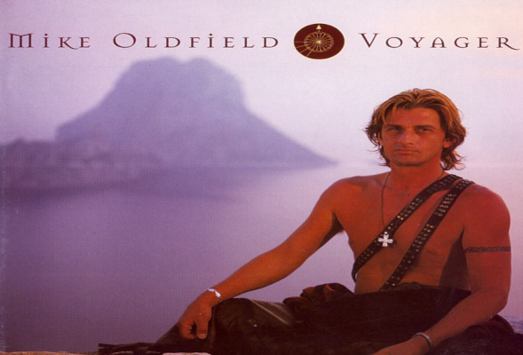

Tubular Bells
Es el primer disco de estudio del compositor y músico británico Mike Oldfield, lanzado el 25 de mayo de 1973.

Incantations
Incantations es el cuarto álbum de estudio del músico.

Tubular Bells III
Tubular Bells III es el 18º álbum de Mike Oldfield

Voyager
Voyager es el decimoséptimo álbum de Mike Oldfield , lanzado en 1996 por Warner.

Songs of distant earth
El título del álbum hace referencia a una novela original de Arthur C. Clarke.

Islands
Islands es el decimoprimer álbum de estudio de Mike Oldfield.